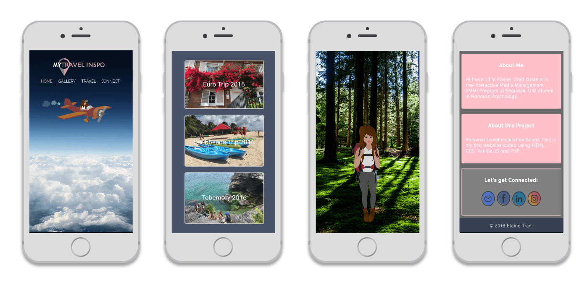

MY ROLE
This project took place September to October 2016. I designed and developed my first website, a personalized travel inspiration site, using HTML, CSS, JavaScript and PHP.

THE CHALLENGE
NO EXTERNAL LIBRARIES
The requirements for this first project was to build a responsive site without external libraries. The challenge was how to go from a conceptualized idea into executable parts.
THE APPROACH
THE DESIGN PROCESS
The design context for the project was to decide our own challenge. My approach was to have purpose in my work. I wanted to bring the concept to life by figuring out what i wanted my learning outcomes to be as well as the tools and skills I wanted practice using.
STUMBLES
// Multiple versions of the site
I started on one version of the site before being introduced to CSS flex box layouts, positioning and media queries which would have been very helpful to know before.
// Adding class active on the Navigation
I created an event listener that would add or remove CSS styling for the active class depending on the user’s current scroll location on the screen.
The issue was that styling from the previous section could not be removed since the last section of the page ‘connect’ would never reach the top of the screen. After multiple tries, the best solution was to subtract the top of the previous section by the pixel height of the ‘connect’ div.

// Incorporating PHP
Originally, I wanted to have a PHP function that would randomly display background images from an array at a set interval. However, there are no timers in PHP because once the server executes PHP it sends the finished HTML result to the browser. I used JavaScript instead.

VICTORIES
// Setting checkpoints
One thing that I have learn through my journey of self-learning is that building takes a lot of time. Thus, I started on the project a month before and set checkpoints every week to see how I have progressed.
// Adding in a Gallery Feature
I finished the site at the beginning of the week and took the extra time to build a responsive gallery. I used PHP to randomize the order of the divs displayed in the gallery.
RELECTIONS -WHAT I LEARNED
I learned that the process of building helps to solidify my skills by giving it context. A place to make errors and see how things work together. My next steps to learning would be embracing variation in terms of the environment and context of use.